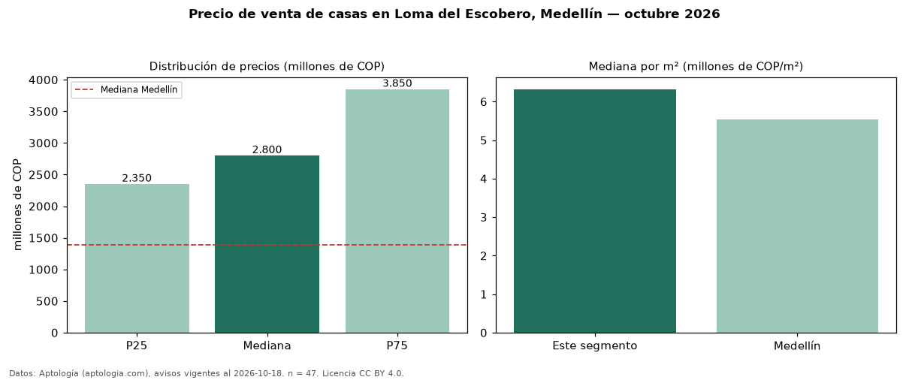

Precio de venta de casas en Loma del Escobero, Medellín — octubre 2026
COP 2,80 mil millones es el precio mediano de casas en venta en Loma del Escobero, Medellín (n = 47 avisos). Eso es 101 % por encima de la mediana de Medellín para casas (COP 1,39 mil millones). Por metro cuadrado, la mediana es COP 6,32 millones/m² (n = 42 avisos con área), 14 % por encima de Medellín (COP 5,53 millones/m²). Por precio mediano es el puesto 7 de 39 barrios de Medellín con al menos 30 avisos de casas en venta (COP): entre las más caras. El área mediana anunciada es 450 m². El segmento con más oferta es el de 3 o más habitaciones (45 avisos, mediana COP 2,85 mil millones). La administración mediana declarada es COP 700.750 al mes (n = 30). El estrato más frecuente es 5 (53 % de los avisos con estrato). Datos: Aptología (aptologia.com), CC BY 4.0 — https://www.aptologia.com/casas-en-venta/medellin/loma-del-escobero. Archivos: PDF, CSV con las cifras y gráfica PNG.

| Avisos únicos | 47 |
|---|---|
| Percentil 25 | COP 2.350.000.000 |
| Mediana | COP 2.800.000.000 |
| Percentil 75 | COP 3.850.000.000 |
| Mediana por m² | COP 6.322.006 |
Fuente: avisos vigentes de portales inmobiliarios recopilados por Aptología, deduplicados (mínimo 30 avisos únicos por celda). Precios pedidos, no cerrados. Fecha: 2026-10-18.